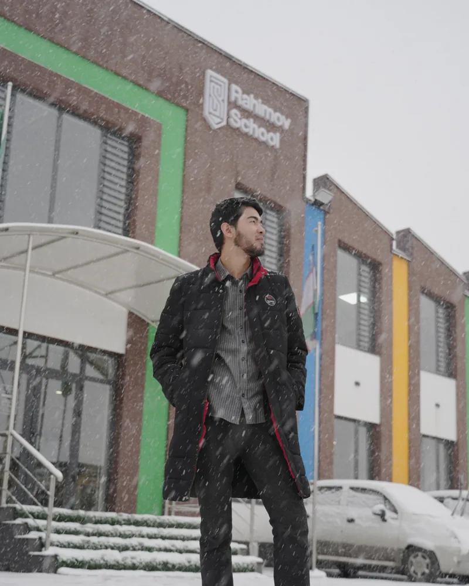

About · Teacher Shokh
Shokhrukh Rejavaliev
I'm Shokhrukh Rejavaliev, an English teacher in Tashkent, Uzbekistan. Online I go by Teacher Shokh. I teach young learners and teenagers at Rahimov School, prepare students for Cambridge English exams and IELTS, and write about how languages are learned and how they should be taught.
My name is also written Shohruh Rejavaliyev, the Uzbek spelling, and Shokhrukh Rejavaliyev.
What I think and write about
The questions I keep coming back to, with links to where I work on them.
One question drives me: how do learners actually learn, and how much of that can a teacher influence? So I read second language acquisition research, pedagogy, psychology and philosophy, then test what I find in the classroom.
-
Teaching young learners and teens
Most of my week is spent with children aged 7 to 14. What works with them is rarely a scaled-down adult lesson.
-
Second language acquisition
How people actually pick up a language, and what that changes about what a teacher does on Monday morning.
-
Cambridge exams and IELTS
Preparing learners for Cambridge English Qualifications and IELTS without turning every lesson into a test drill.
-
Classroom management and rapport
Respect, names, routines, and the difference between controlling a class and guiding it.
-
Gamification and motivation
Reward systems that keep learners going without teaching them to work only for points. I lead this at Rahimov School.
-
Teacher development
CELTA, CTYL, now DELTA, and the habits that make a teacher better between courses.
-
Tools for teachers
I build the tools I wish I'd had: lesson boards, exam-prep trackers, practice platforms.
How I got here
From helping out at my lyceum to CELTA and the road to DELTA. The longer version is in Reading my first channel.
- 2014–2021
Specialized Boarding School No. 63, the lyceum in Quva, where I grew up. I graduated in 2021.
- 2018–2021
My first taste of teaching: assistant to my English teacher at the lyceum, helping with her after-school courses. Unpaid, and very enthusiastic.
- 2021
Started my first Telegram channel and began preparing for IELTS in Fergana with Bokhodir Teshaboyev (Mr. Baha), the first teacher I saw teach life along with the language.
- 2022
My first teaching job, at Seoul Learning Center in Quva, then an intensive summer General English course at Merit Education Center. IELTS 7.0, and the move to Tashkent.
- 2022–2023
Academic support at Merit Education Center: helping students with homework, with lessons they found hard, and with catching up after missed classes.
- 2023–2024
Joined Rahimov School as marketing assistant and event manager: social media, outreach to parents, academic competitions, holiday celebrations and school trips.
- 2024–now
English teacher for primary and elementary students at Rahimov School, and lead for its gamification and reward systems, under the mentorship of Aziz Rakhimov.
- 2025
IH Certificate in Teaching Young Learners and Teenagers (May) and CELTA (September).
- 2026
IELTS 8.0. Back at university in an English language teaching evening programme, and preparing for DELTA.

Beyond teaching
I'm a human being, not a job title. I have a lot of interests, and I can't be defined by a single word, so I try to embrace the complexity of my passions: teaching, vibe-coding tools for EdTech, writing, poetry and literature, entrepreneurship, videos for Instagram and YouTube, and singing, just for myself. Each one has its own corner.
My Telegram channels
- @inspiring_teacherEnglish teaching, mostly primary students
- @mrshokh_blogMy blog in Uzbek
- @mrshokh_notesMy notes
- @mrshokh_insightsKey insights, in English only
- @mrshokh_poetryPoetry & literature
- @mrshokh_wantrepreneurshipMy curiosity about entrepreneurship
- @mrshokh_remindersWe need reminders
- @classblog_4AMy students' digital project
Contact and profiles
How to reach me, and the places where I'm me. Anything else using the name Teacher Shokh isn't.
- Phone
- +998 90 040 17 40